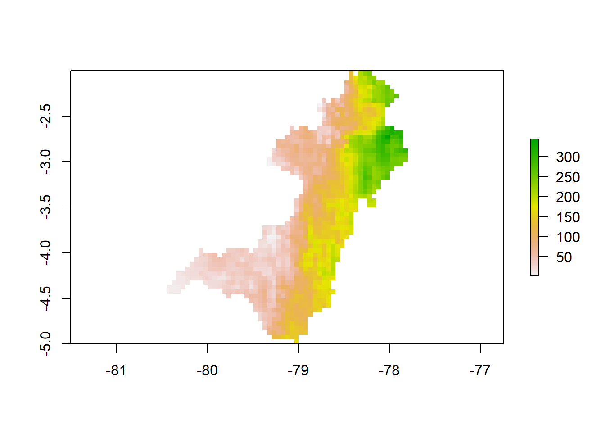
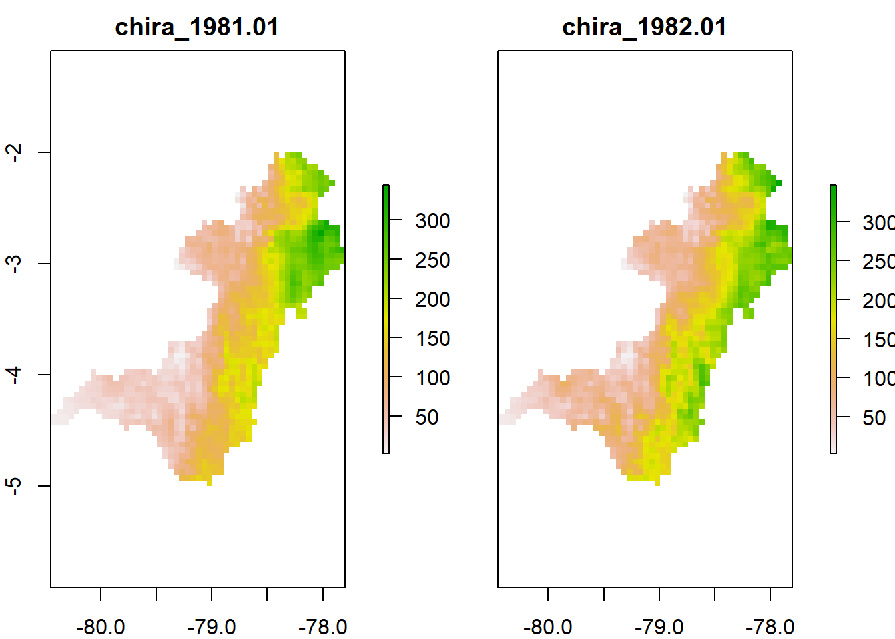
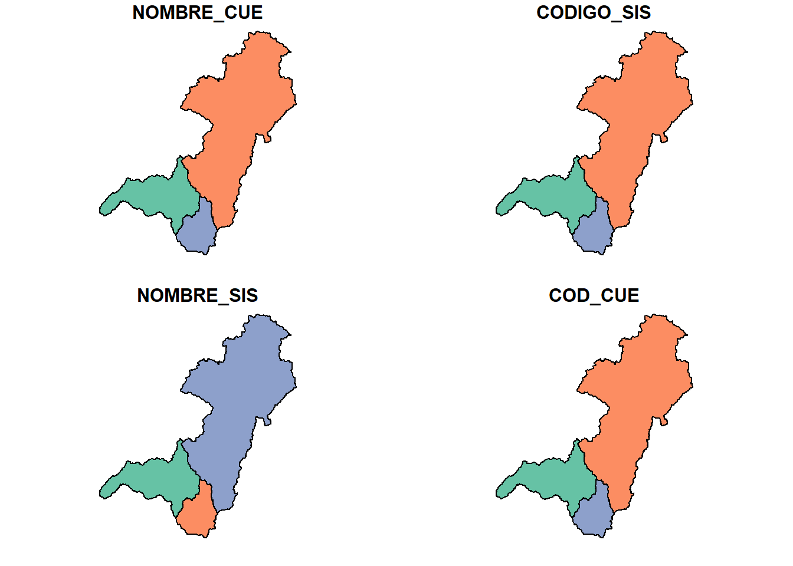
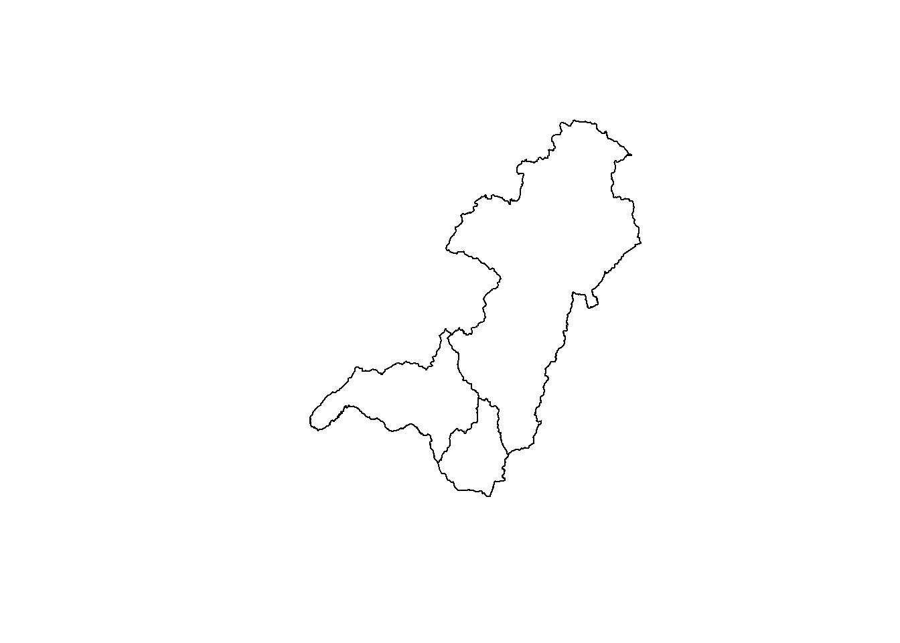
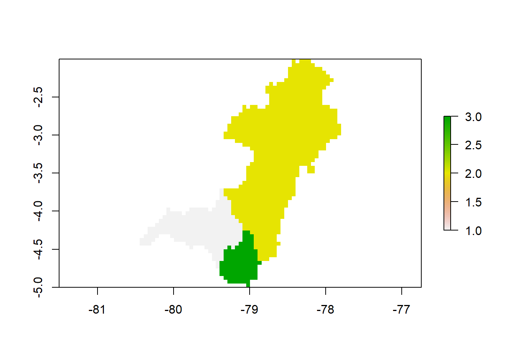
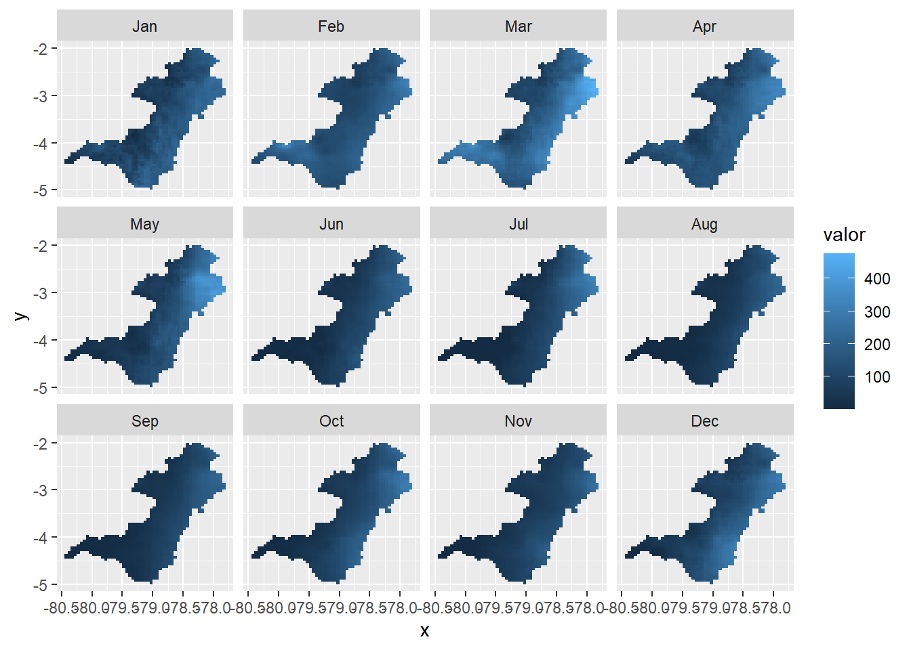

Universidad Técnica de Machala
Facultad de Ciencias Agropecuarias
Carrera de Agronomía
Geomática
Datos Informativos
Docente: Ing. Agr. Angel Eduardo Luna Romero
Semana: 4
setwd("C:/Users/Eirck/Desktop/diarios/")
library(pacman)
p_load(tidyverse, sf, sp, raster, rgdal, glue, RColorBrewer)#cargar una imagen(raster)
img<- raster("CHIRPS/chira_1981.01.tif")
plot(img)
obj<- paste0("quinto",LETTERS[1:2], rep("alumno",12), 1:12)
view(obj)
head(obj)## [1] "quintoAalumno1" "quintoBalumno2" "quintoAalumno3" "quintoBalumno4" "quintoAalumno5" "quintoBalumno6"class(obj)## [1] "character"#$ nos ayuda cuando lo usemos en otro programa no modifique el mobre del archivo al final
img<- list.files("./CHIRPS/",
full.names = TRUE , pattern = ".tif$") prm<- c(img[1], img[13])prm<- lapply(prm, FUN = raster) %>% stack()
plot(prm)
Debido a que el valor NA es un marcador de posición y no un valor numérico real, no se puede incluir en los cálculos. Entonces, de alguna manera debe eliminarse de los cálculos para obtener un valor significativo. Si incluye el valor NA en un cálculo, dará como resultado un valor NA.
prm<- mean(prm, na.rm=T)st_readsigue las convenciones de la base R, similar a cómo lee datos tabulares en data.frames. Esto significa que los datos de caracteres se leen, por defecto como factors.
bsn<- st_read("SHP/CUENCAS.shp") #opcion 1 ## Reading layer `CUENCAS' from data source `C:\Users\Eirck\Desktop\diarios\Fer9819.github.io\SHP\CUENCAS.shp' using driver `ESRI Shapefile'
## Simple feature collection with 3 features and 4 fields
## Geometry type: POLYGON
## Dimension: XY
## Bounding box: xmin: -80.45177 ymin: -5.011824 xmax: -77.79864 ymax: -2.001942
## Geodetic CRS: WGS 84plot(bsn)
#
class(bsn)## [1] "sf" "data.frame"#
head(bsn)| NOMBRE_CUE | CODIGO_SIS | NOMBRE_SIS | COD_CUE | geometry |
|---|---|---|---|---|
| 70 R<U+FFFD>o Chira | 22 | Catamayo-Chira | 210 | POLYGON ((-79.33278 -4.5442… |
| 78 R<U+FFFD>o Santiago | 30 | Santiago | 280 | POLYGON ((-78.6028 -4.24260… |
| 79 R<U+FFFD>o Mayo | 31 | Chinchipe | 300 | POLYGON ((-78.90952 -4.8406… |
cnc<- shapefile("SHP/CUENCAS.shp") #opcion 2
plot(cnc)
head(cnc)| NOMBRE_CUE | CODIGO_SIS | NOMBRE_SIS | COD_CUE | |
|---|---|---|---|---|
| 0 | 70 R�o Chira | 22 | Catamayo-Chira | 210 |
| 1 | 78 R�o Santiago | 30 | Santiago | 280 |
| 2 | 79 R�o Mayo | 31 | Chinchipe | 300 |
seccion 2 —————————————————————
Cambiar simbolo, letra en cualquier palabra
aux<- "compajero"
aux1<- str_replace(aux, pattern = "j", replacement ="nh")
head(aux1)## [1] "companhero"cnc@data$id<- 1:nrow(cnc@data)
cnc_r <- raster::rasterize(cnc,prm, field="id")
plot(cnc_r)
#Estadistica zonal
znl<- raster::zonal(prm, cnc_r, fun= mean)
tbl<- data.frame(meses=month.abb, mes=1:12)
mnt<- "01.tif"rsl<- znl %>%
as_tibble() %>%
inner_join(., cnc@data, by= c("zone"="id")) %>%
mutate(NOMBRE_CUE= str_replace(NOMBRE_CUE,
pattern = "�",replacement = "i")) %>%
dplyr::select(sistema=NOMBRE_SIS, zona=zone, PP= value) %>%
mutate(PP=as.numeric(PP) %>% round(., digits = 2),mes=str_replace(mnt, pattern = ".tif", replacement = "") %>% as.numeric()) %>%
inner_join(.,tbl, by=c("mes")) %>%
dplyr::select(sistema, zona, meses, PP)Funcion para estadistica zonal ——————————————
mipromedio <- function(mnt){
print(mnt)
mnt <- paste0(mnt, ".tif")
fls <- grep(mnt,img, value = T)
stk <- stack(fls)
avg <- mean(stk, na.rm= T)
writeRaster(avg,glue("promedio_{mnt}"), overwrite= T)
# rasterizar los shapefile
cnc@data$gid<- 1:nrow(cnc@data)
lgr <- raster::rasterize(cnc, avg, field = "gid")
znl <- raster::zonal(avg,lgr, fun = mean)
#Ajuste de la tabla de resultados
mnt <- str_replace(mnt, pattern =".tif", replacement = "" )
rsl<- znl %>%
as_tibble() %>%
inner_join(., cnc@data, by= c("zone"="gid")) %>%
mutate(NOMBRE_CUE= str_replace(NOMBRE_CUE,
pattern = "�",replacement = "i")) %>%
dplyr::select(sistema=NOMBRE_SIS, zona=zone, PP= value) %>%
mutate(PP=as.numeric(PP) %>% round(., digits = 2),mes= mnt %>% as.numeric()) %>%
inner_join(.,tbl, by=c("mes")) %>%
dplyr::select(sistema, zona, meses, PP)
write_csv(rsl, paste0("promedio_",mnt,".csv"))
print("fin")
return(rsl)
} avg <- map(.x =c(paste0("0",1:9), 10:12), .f= mipromedio)## [1] "01"
## [1] "fin"
## [1] "02"
## [1] "fin"
## [1] "03"
## [1] "fin"
## [1] "04"
## [1] "fin"
## [1] "05"
## [1] "fin"
## [1] "06"
## [1] "fin"
## [1] "07"
## [1] "fin"
## [1] "08"
## [1] "fin"
## [1] "09"
## [1] "fin"
## [1] "10"
## [1] "fin"
## [1] "11"
## [1] "fin"
## [1] "12"
## [1] "fin"Extraer valores de imagen raster —————————————-
rst <- list.files(".", full.names = T, pattern = ".tif$") %>% stack()
vls <- rasterToPoints(rst,xy=T) %>%
as.tibble() %>%
gather(var, valor, -x, -y) %>%
mutate(mes=parse_number(var)) %>%
inner_join(.,tbl, by = c("mes")) %>%
dplyr::select(x,y,meses,valor)Graficar los valores promedios ——————————————
vls$meses <- factor(vls$meses, levels = unique(vls$meses))
ggplot(vls)+
geom_tile(aes(x=x,y=y, fill= valor))+
facet_wrap(~meses)